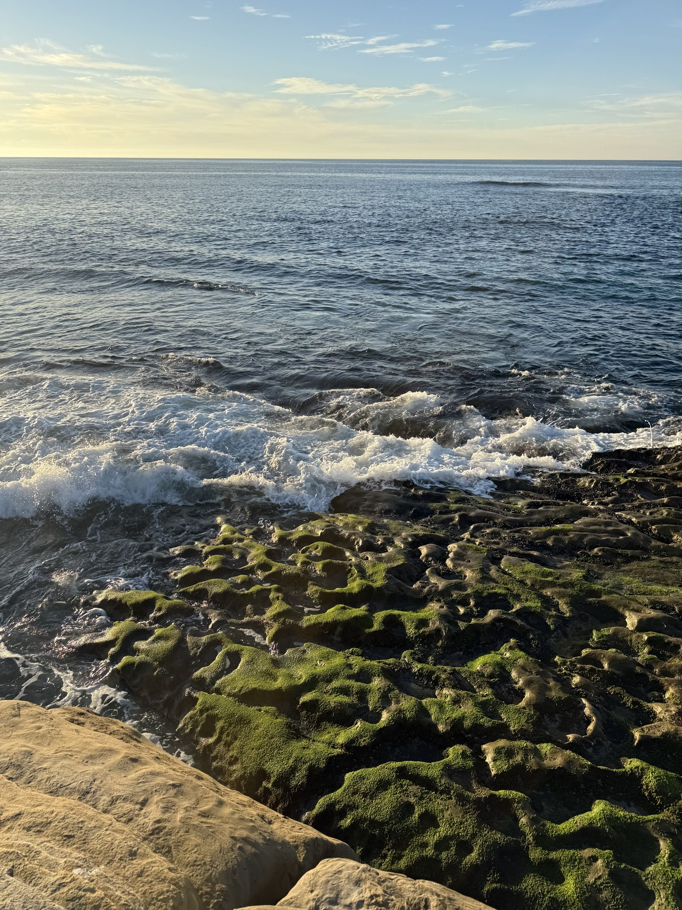
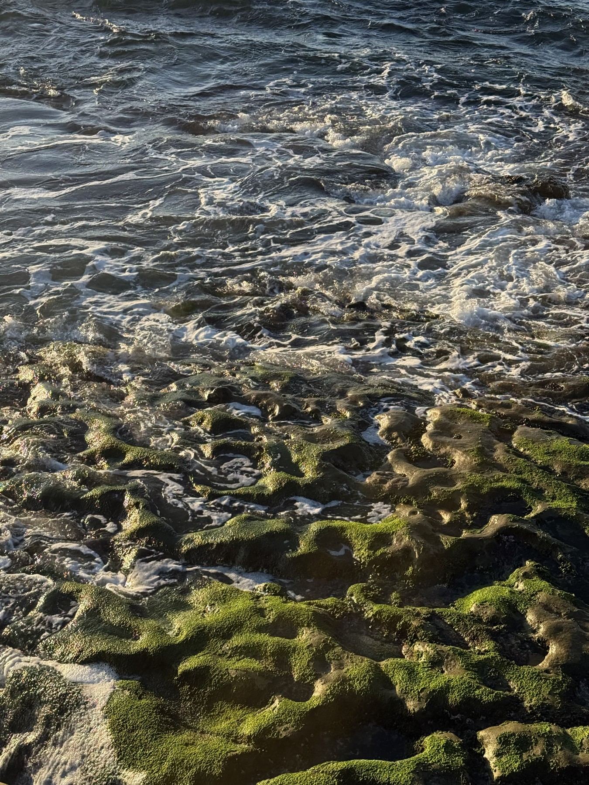
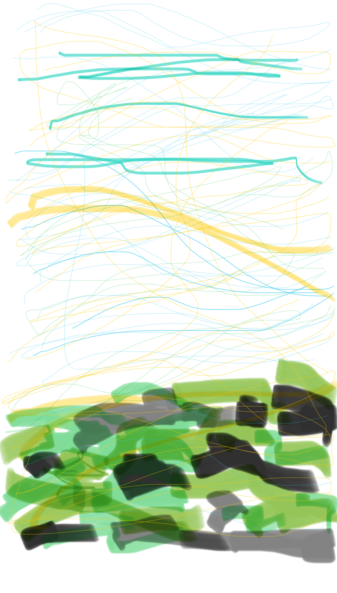
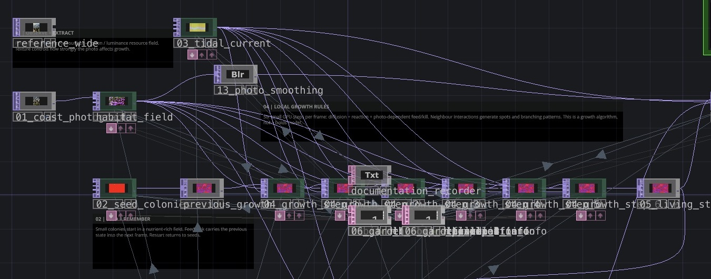
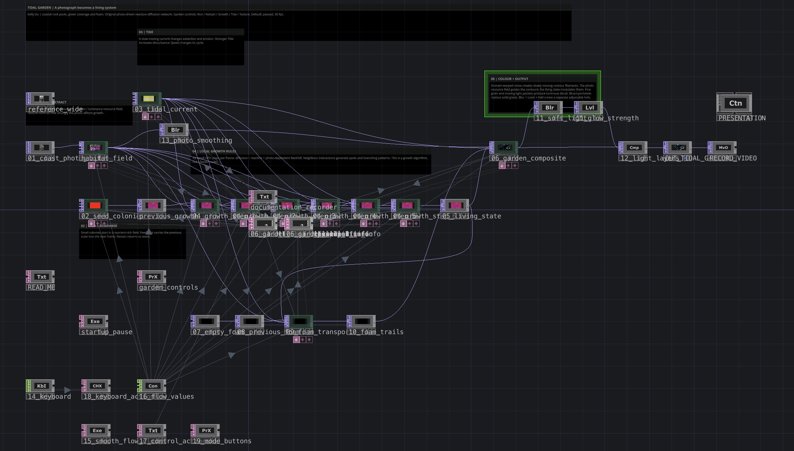
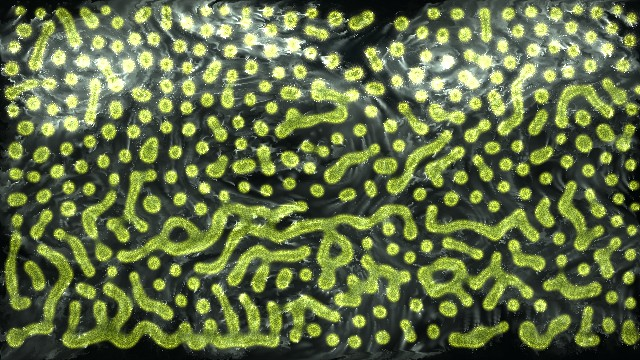
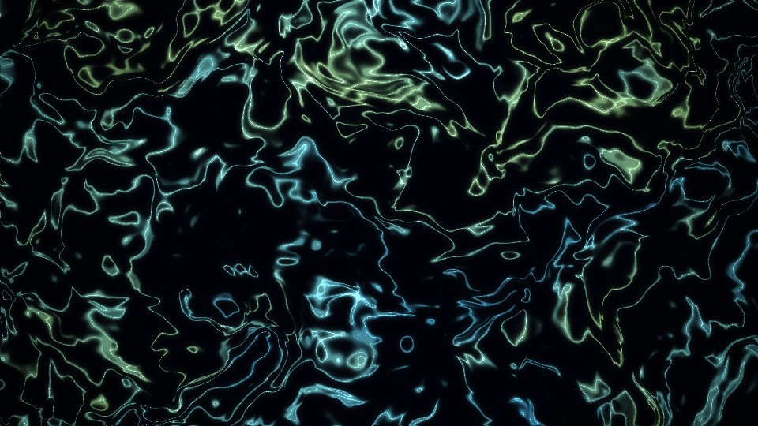

1 · Calm
A simulation project inspired by tides, water, and green algae on coastal rocks.
I made this project from two photos I took in La Jolla, San Diego. I was interested in the holes in the rocks, the green patches around them, and the water moving through the gaps. I wanted to turn these small details into a changing network of light.
From the photos
The rock surface is full of holes and connected channels. The green coverage leaves dark spaces between patches, while the water moves around the raised areas. I noticed a connection between the shape of the rocks, the spaces left by the algae, and the paths of the water.


Sketch
I drew thin blue lines for crossing currents and thicker cyan lines for stronger waves. The yellow lines suggest sunlight on the water. The green and dark shapes at the bottom describe algae and rocks. Drawing helped me see how the flowing lines connect to the solid shapes and the spaces between them.

Connection
I connected these observations to a growth system driven by a texture. The close photo becomes a resource field, so different areas support different amounts of growth. A feedback loop carries the previous state forward. I used this structure to explore a tidal growth network, with connected marks and spaces that keep changing.

Process
I used a Movie File In TOP to load the photo and GLSL TOPs for the resource field and Gray Scott growth. Feedback TOPs keep the previous frame. For the visible water-like lines, I layered noise and bent its coordinates to make flowing contours. Blur TOP and Composite TOP add a soft glow around the sharper lines.

The first version felt too dark and green. I changed the colors to pale cyan, light blue, and yellow-green, then balanced the glow so the lines stayed clear. I also adjusted the noise distortion, line width, and speed. Keyboard In CHOP now switches between three strengths, with a short transition between them.


In TouchDesigner, keys 1, 2, and 3 change the water from calm to stronger and then strongest. The current speeds up, the lines become wider, and the distortion increases.
2 · Stronger
3 · Strongest